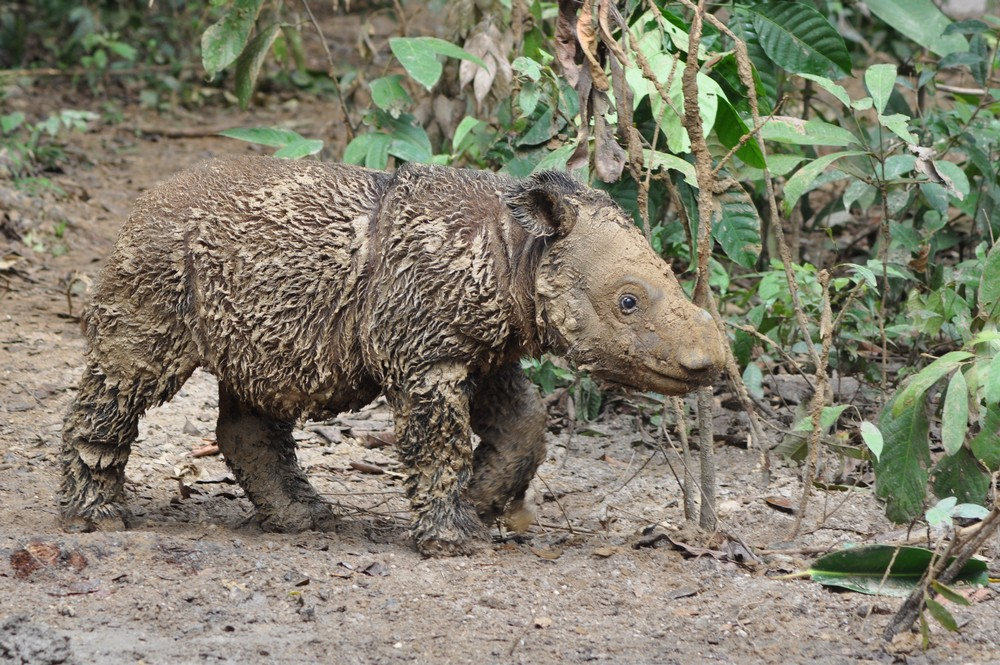

Dicerorhinus sumatrensis
The Sumatran Rhinoceros (Dicerorhinus sumatrensis) is the smallest and most endangered of all rhino species in the world. It is the only Asian rhinoceros with two horns and is notably covered in reddish-brown hair, making it the most primitive of living rhinoceroses.
Globally, fewer than 80 individuals are believed to survive, scattered across isolated pockets of forest in Sumatra and Sabah, Malaysian Borneo. The Sabah population is one of the last remaining wild populations, and conservationists consider the species to be at the very edge of extinction.
Sumatran Rhinos are solitary animals that inhabit dense tropical forests, relying on wallows — mud pools — to regulate their body temperature and protect their skin from insects. They are primarily browsers, feeding on fruits, leaves, twigs, and bark.
Decades of deforestation for agriculture, logging, and human settlement have eliminated the vast majority of suitable Sumatran Rhino habitat, leaving tiny isolated forest fragments.
Intensive poaching throughout the 20th century for the highly prized rhino horn drove the species to the brink of extinction. The effects of this pressure are still felt today in the devastatingly small remaining population.
Female rhinos that go too long without mating develop uterine tumours and cysts that render them infertile. With such a small and dispersed population, natural breeding opportunities are extremely rare.
Changes in rainfall patterns and rising temperatures affect the availability of food sources and wallowing sites critical to the rhino's survival.
The Borneo Rhino Sanctuary in Tabin Wildlife Reserve, Sabah, is working to establish a managed breeding programme to prevent the complete extinction of the Sabah population.
Scientists are using advanced reproductive technologies including in-vitro fertilisation and stem cell research in a last-ditch effort to save the species.
Remaining individuals in Sabah are tracked using GPS collars and camera traps to monitor their health, movements, and any breeding activity.
Malaysia, Indonesia, and international conservation organisations are collaborating on emergency measures to prevent the total extinction of this species.